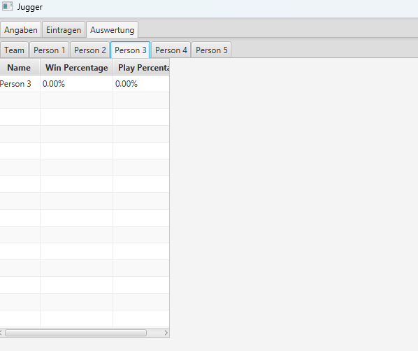

Welcome to My Portfolio
I've been interested in Game Design isnce I was about 8 years old. I first learned to work with scratch together with my dad. But after a while, this wasn't enought anymore. Now, years later, I've made some big projects.
Multiplayer Social Deduction Game


I designed and developed a multiplayer social deduction game inspired by the classic party game Werewolves in Unity. As a solo developer, I implemented every part of the project, including the lobby system, networking, role distribution, and the day/night cycle. Players gather in a lobby, receive randomly assigned roles, and participate in alternating phases: at night, they complete secret tasks, and during the day, they engage in discussions to expose the hidden werewolves. This project allowed me to gain hands-on experience in multiplayer architecture, user interface design, and synchronizing real-time player interactions — all while translating social gameplay into a digital format. You can find it here.
My Matura work
For my Matura thesis, I created a Java-based desktop application to support the sport Jugger. The program enables users to input and manage match data, which is stored locally in a custom JSON-based data structure. Using JavaFX, the results are then evaluated and displayed visually in a clear, user-friendly interface. As a solo developer, I designed and built the entire system, including the data handling, architecture, and UI. This project gave me valuable experience in creating custom data types, working with persistent storage, and developing practical tools from scratch. You can find it here.
Multiplayer Card Game
As part of a university lecture, I worked in a team of four to design and develop a four-player multiplayer game inspired by the card game Hol’s der Geier. The challenge was to create the game entirely from scratch while only using JavaFX for the visual integration. The game features a lobby system where players can host or join matches. Once the game begins, each player receives 12 cards to strategically play across multiple rounds. We also implemented a real-time chat, a short tutorial, and integrated audio design to enhance the experience. I contributed to both the technical development and the overall design, collaborating closely with my teammates to deliver a complete and polished multiplayer experience. This project strengthened my skills in team-based development, Java programming, and balancing gameplay mechanics with user-friendly design.
Program to help other Students
Alongside classmates, I co-founded Mentorly, a support platform for students. I built a website and Discord server where students could ask questions and receive help from volunteer mentors. I was the lead developer, responsible for technical implementation and infrastructure (including domain setup). Although usage remained limited, the project gave me experience in web development, community management, and the challenges of building engagement. The platform is still online at mentorly.ch.
Ongoing - Development of a deckbuilding Card-Game


Through the Dungeons is a roguelike deckbuilding game created in Godot as part of a video game development course at my Gymnasium. The game follows a classic roguelike loop where players choose a class, build a deck of cards, and progress through dungeon encounters, selecting new cards or upgrades after each fight. I implemented all core systems myself, including the card system and deck-building logic, with a strong focus on scalable and flexible architecture using Godot’s resource system. This ongoing project serves as a hands-on learning experience in game architecture, system design, and structuring larger game projects. You can find it here.